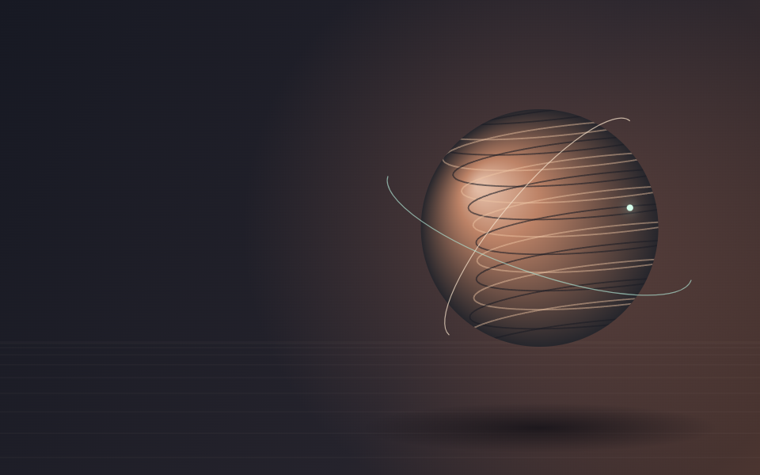
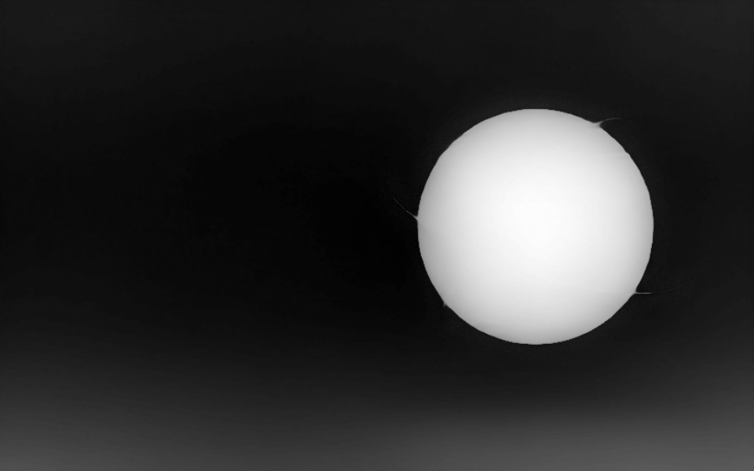

Balans.
Låt ett tydligt motiv hålla ihop rummet.
Utforska text som följer en filmad yta, bilder med djup och små interaktioner att bygga vidare på.
Prova studierna ↓Scrolla framåt och bakåt. Textens perspektiv följer spårade punkter i den riktiga filmen.
Form i rörelse.
Originalfilm med spårad plan yta. Text finns kvar även när filmen är avstängd.
Rör pekaren över bilden. En lokalt beräknad djupkarta förskjuter motivets olika delar. På mobil kan du scrolla.


Relativt bilddjup, inte en uppmätt 3D-modell. Originalbilden är det stilla alternativet.
Scrollen följer korten på dator. Svep eller använd piltangenter på mobil.
Låt ett tydligt motiv hålla ihop rummet.
Variera rytm och densitet med ett syfte.
Led blicken till nästa verkliga handling.
Ge interaktionen ett läsbart resultat.
Ett sammanhängande färgskifte genom sektionen. Med minskad rörelse visas den färdiga kompositionen.
Prova med pekare, tangentbord och inställningen för minskad rörelse.
En lokal spotlight följer pekaren.
En lätt lutning med en riktad reflex.
En avgränsad glans, med stilla innehåll.
En bokstav i taget.
taktil.precis.lekfull.
240en demonstration, ingen kundstatistik
Stanna pekaren eller tangentbordsfokus över ytan för att pausa.
Börja med ett tydligt motiv.
Låt innehållet bestämma rytmen.
Gör nästa steg enkelt.
Skapa plats för detaljer.
Förena material och ljus.
Prova en annan komposition.
En scrollstyrd lutning rätar ut kompositionen. Rörelsen tar slut när innehållet går att läsa.